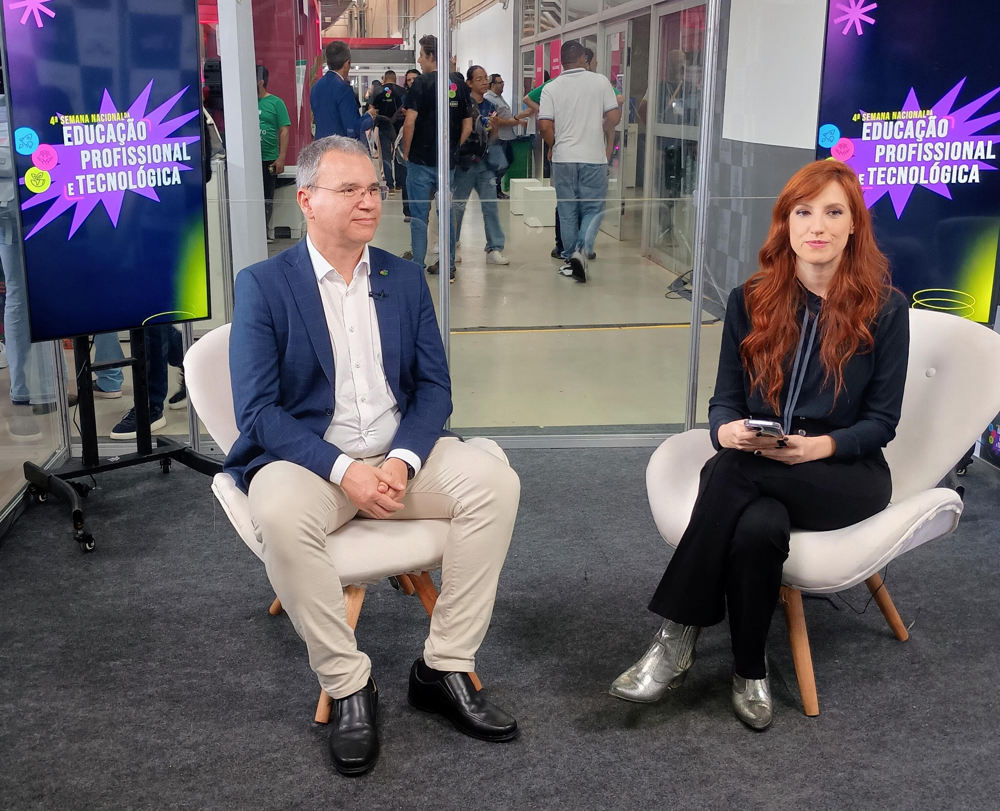
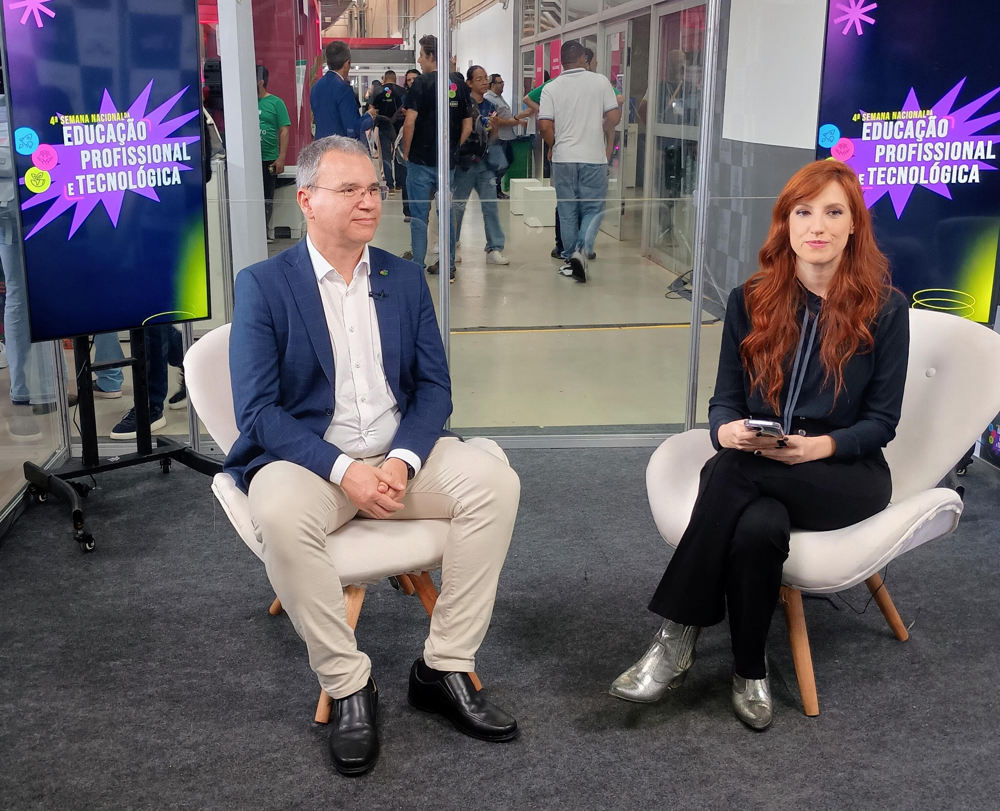

IFSul apresenta projetos na Semana Nacional de Educação Profissional e Tecnológica


 

O Instituto Federal Sul-rio-grandense (IFSul) participa, até quinta-feira (28) da Semana Nacional de Educação Profissional e Tecnológica, promovida pelo Ministério da Educação (MEC), no Estádio Mané Garrincha, em Brasília. A instituição apresenta 12 projetos de diferentes câmpus, mostrando sua diversidade de cursos e possibilidades de formação ofertadas. A delegação do IFSul conta com mais de 50 pessoas, entre estudantes e servidores, e estão representados os câmpus Bagé, Camaquã, Charqueadas, Gravataí, Lajeado, Novo Hamburgo, Passo Fundo, Pelotas-Visconde da Graça, Sapiranga, Sapucaia, Santana do Livramento e Venâncio Aires. Cada projeto é apresentado por um/a coordenador/a e dois estudantes. Além das importantes trocas de experiências entre os estudantes, que descobrem novas possibilidades ao encontrar problemas e soluções diferentes em suas áreas de atuação, o evento proporciona a experiência de apresentação de seus projetos a públicos diversos, como alunos de escolas da região, autoridades políticas e público em geral, com ou sem conhecimento na área dos projetos.
A abertura do evento contou com a presença de diversas autoridades políticas, com destaque para o ministro da Educação, Camilo Santana. Na ocasião, Santana destacou a importância da educação profissional e tecnológica vinculada ao ensino médio, que no caso dos institutos se materializa no Ensino Médio Integrado, quando os estudantes cursam o Ensino Médio já com uma formação em um curso técnico. O ministro falou sobre o desafio de chegar a pelo menos 30% dos estudantes de Ensino Médio na Educação Profissional, o que representa pelo menos o dobro do percentual atual. Na cerimônia, o IFSul teve destaque, ao ter o estudante Felipe Antônio de Andrade compondo a mesa e representando, junto de Stéfanie Andrade, do Centro Técnico de Educação Profissional (Cetep) Rio das Contas (BA). Felipe é estudante do curso integrado de Técnico em Automação Industrial, do câmpus Lajeado do IFSul, e discursou para a plateia com desenvoltura, chamando a atenção dos presentes, inclusive do ministro, que fez questão de conhecer o projeto de lançamento de foguetes apresentado pelo câmpus na mostra de trabalhos. Em sua fala, o estudante também destacou a importância de um Ensino Médio Integrado, sob a perspectiva dos alunos. Para Felipe, ter disciplinas práticas e um formato de aulas fora do convencional fazem o estudante se sentir motivado e descobrir suas próprias vocações e potencialidades. “Estudar não precisa ser chato. Aprender é legal”, resume. O estudante destacou ainda que a participação em eventos como aquele é importante para ampliar os horizontes dos jovens, ao verem outras realidades.
O IFSul também conseguiu destacar sua presença e trabalhos nos canais ligados à Empresa Brasil de Comunicação (EBC), que destacaram o projeto da consolidação dos cursos binacionais, apresentado pelo câmpus Santana do Livramento. O projeto foi destacado tanto nos canais de TV, quanto de rádio, com destaque para entrevista veiculada na Hora do Brasil para todo o país, na edição de 26 de novembro. O reitor Flávio Nunes também teve espaço em entrevista ao canal Educação, da EBC. Na oportunidade, o gestor pode apresentar a instituição e falar sobre os números da instituição, além da experiência com a Semana Nacional da EPT. Flávio destacou os câmpus binacionais e a experiência de parceria com a Universidad del Trabajo de Uruguay (UTU), formando estudantes brasileiros e uruguaios com diplomação válida tanto no Brasil quanto no Uruguai. Além disso, também destacou a importância do Ensino Médio Integrado e da Educação Profissional e Tecnológica. Sobre a Semana Nacional, destacou a oportunidade de trocas de experiências entre as instituições. “A Semana é um grande momento de socialização de tudo aquilo que está sendo produzido dentro da instituição, mas também uma oportunidade para estudantes e servidores de verem o que está sendo feito e produzido nas outras instituições para, assim, poderem levar essas experiências e possibilidades para a sua instituição”. A Semana Nacional da Educação Profissional e Tecnológica termina nesta quinta-feira (28), às 18h, depois de três dias de intenso movimento nos estandes e de palestras e oficinas simultâneas.